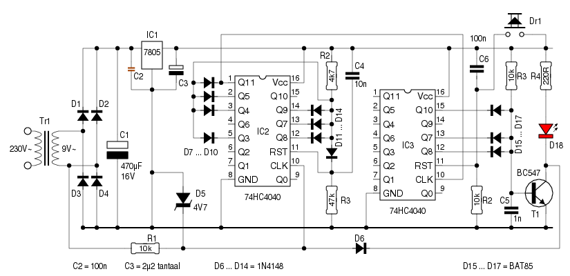

Timers bestaan er in vele maten en gewichten, maar voor korte
tijden is het vaak de 555 die aan het werk wordt gezet.
Wie echter een timer wil die minuten ―of zelfs uren― kan
aftellen, loopt al snel tegen een beperking aan: de
R/C-combinatie vergt een grote weerstand en een grote
elko, hetgeen gans de schakeling onnauwkeurig maakt.
Velen zullen al snel naar een microcontroller grijpen, maar onderstaand schema bewijst dat het ook met een stel binaire tellers te doen is.

Tr1, D1 ... D4, C1 ... C3 en IC1 vormen samen een klassieke 5Volt-voeding. Uitleg hierover lijkt me overbodig.
IC2 is de eerste binaire teller. Hij krijgt zijn klokpulsen
―via R1― van de voedingstrafo - 50Hz, dus. D5 beveiligt de
CLK-ingang tegen te hoge en tegen negatieve spanningen. Vermits
IC1 een 12-bits teller is, zou hij van 0 naar 4095 tellen, ware
het niet dat enkele dioden dat gedrag beïnvloeden. Immers,
zodra de tellerstand 30001 bereikt is, krijgt R2 de kans om de RESET-ingang hoog te
maken, zodat de tellerstand onmiddelijk op 0 springt.
Bij het inschakelen van de voedingsspanning is het C4 die voor
een resetpuls zorgt.
Het gevolg van dit alles is, dat Q11 elke minuut een klokpuls geeft aan IC3, de tweede teller.
Bij IC3 passen we dezelfde “truuk met de dioden” toe, met dit
verschil dat T1 in geleiding gaat als de ingestelde tellerstand
bereikt is, dat de LED oplicht, en dat er vervolgens niets meer
gebeurt, omdat T1 de CLK-ingang van IC2 kortsluit.
Enkel het indrukken van Dr1 of het uit- en terug inschakelen van
de voedingsspanning kan daar verandering in brengen.
Vermits IC3 om de minuut een klokpuls krijgt, is het eenvoudig
de gewenste tijd in te stellen: vertaal het aantal gewenste
minuten naar een binaire voorstelling, en plaats een
diode2 op
elke uitgang die overeenkomt met een hoog bit.
Voorbeeld:
Gewenste tijd = 1408 minuten = 0101 1000 0000
Dus moet er een diode aan Q10, Q8 en Q7 (zoals het schema laat
zien).
Het maximum bedraagt 4095 minuten, owel 68 uur en 15 minuten. Wie meer wil, kan een tienteller (4017) tussen IC2 en IC3 plaatsen.
Voor een praktische toepassing kan T1 uiteraard andere zaken schakelen dan een LED. T1 dient daarbij aangepast te worden aan de stroom die hij moet schakelen.